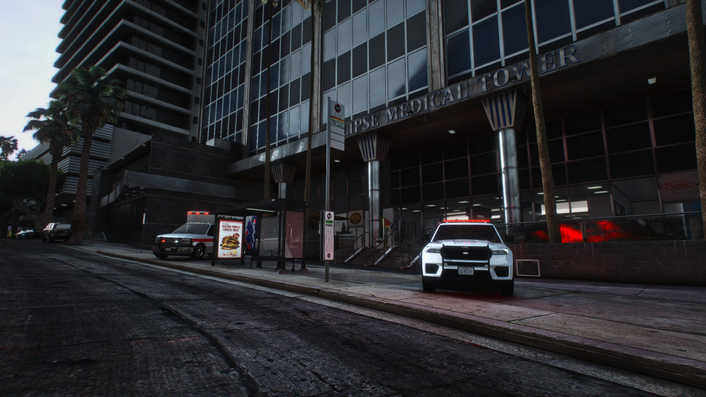

Unsere Einsatzgebiete

Feuerwehr
Effiziente Brandbekämpfung für Sicherheit und Schutz.

Medizinischer Dienst
Schnelle, lebensrettende Hilfe rund um die Uhr.

Teamwork
Starke Zusammenarbeit für eine sichere Gemeinschaft.
Über Uns
SAFR & SAMS sind die tragenden Säulen des Rettungswesens in San Andreas. Unser Ziel ist es, Leben zu retten, Brände zu bekämpfen und Sicherheit zu gewährleisten.
Unser High Command